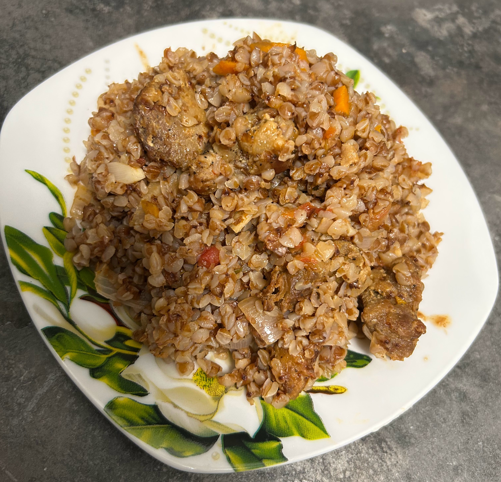

<- Home
Buckwheat with Meat

Description
Easy-to-make high-protein dinner. It doesn't require extreme effort, but it makes you
stay in the kitchen for a while. Back in the days it was hard to find buckwheat in any
sort of stores but nowadays this is not a problem so you should find all the ingredients
at your local store or in the big supermarkets, depending on where do you live.
Ingredients
- Oil
- Carrot
- Onion
- Buckwheat
- Meat (usually chicken)
- Water
- Canned Tomatoes
- Salt and your favourite seasonings
Steps
- Cut the onion and the carrot into cubes
- Cut the meat into pieces
- Fry the meat in the oil for a while, then add the onion and the carrot
- Add the seasonings
- Add the canned tomatoes and fry for 5 minutes
- Add the buckwheat and the water in proportion 1:3 (3 times more water than buckwheat)
- Cook them until the boiling point, then lower the heat
- Cook until the water is evaporated
- Let it cool down for 5 minutes and VOILA, you can serve your dinner